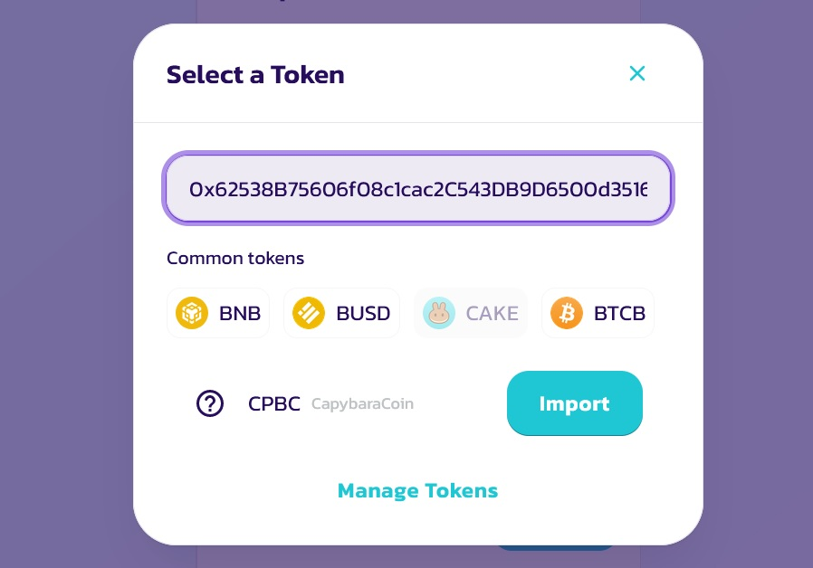

How to buy CapybaraCoin
In this article you will learn how to buy CapybaraCoin using Pancackeswap
If you want to buy CapybaraCoin using PancakeSwap, you will need to first connect your wallet to the platform. To do this, you will need to use the Metamask extension for your browser.
Learn how to setup Metamask extention in your browser. Follow this link.
Once you have BNB in your Metamask account, you can head over to the PancakeSwap website and connect your wallet. Then, you will be able to see all of the available tokens to trade. To buy CapybaraCoin, you will need go to Trade on navigation bar and choose Swap.
You could see this window:
Tap on the "CAKE" to change pair coin. in opened panel paste CPBC smart-contract address 0x62538B75606f08c1cac2C543DB9D6500d351624E
Among the proposed tokens, select CPBC:
Now you able to see current price of token. Choose amount that you would want to buy and press Swap button.
⚠️Important: carefully follow the price impact below 5-6%. It's accepteble precent for swap.
How to setup Metamask
MetaMask is one of the most popular Ethereum non-custodial wallets, we're going to walk through how to set one up
Step #1: Downloading MetaMask
To create a secure wallet, you should download the MetaMask browser extension from the official website https://metamask.io
This extension is supported by Chrome, Firefox, Brave, and Edge browsers.
Click on the "Download for ✨Your browser✨" button. This will take you to the Extensions store where you can download and add the extension to your browser.
Step #2: Creating Your Account
The next step is setting up your account
If this is your first time, after opening MetaMask, you'll most likely get a screen similar to the one below and you'll want to select "Create a Wallet".
After doing so, you'll be asked to accept the terms of use and will then need to create a password (this password will be needed for logging into your wallet from time to time).
Then you will get your seed phrase. It is 12 words that could give you ability to restore access to your wallet
Congratulations! You setted up your Metamask!
Now it would be nice to fund your Metamask account with some BNB
Step #3: Set up Binance Smart Chain on Metamask wallet
Default chain for Metamask is Ethereum. To add Binance Chain click on Networks and Add Network
Then you could add chain from a list of popular networks. But we will do it manually. Click "Add a network manually" link under list

Fill these fields this way:
Network NameSmart Chain
New RPC URLhttps://bsc-dataseed.binance.org/
Chain ID56
Currency SymbolBNB
Block Explorer URL (Optional)https://bscscan.com
Step #4: Fund your account
You can fund your wallet from crypto exchanges or P2P transfer
To deposit, you will need wallet address, copy your wallet address in this way:
Congratolations! Now you have BNB on your wallet. Lets buy some CapybaraCoin! :3
Let's see how to do it folowing this link.
How to get profit
CapybaraCoin is a project that allows you to invest in a new cryptocurrency and get a profit from it. The project is based on the Ethereum blockchain, which means that it is very secure and reliable. The project is also very easy to use, which makes investing simple.
#1 Introduction
The CPBC coin is a young project with a lot of potential. The community is behind it and the tokenomics management tools are simple and easy to understand.
#2 Holding
The first thing to do is to get CapybaraCoin tokens. Being highly volatile, the coin has great upside potential. Its main goal is to become the basis of the future ecosystem, which will strengthen its position in the market.
#3 Airdrops
Follow the social networks of CapybaraCoin, from time to time there will be activities on various platforms, everyone will have the opportunity to receive an airdrop.
#4 Staking In Development
We are currently developing staking opportunities as part of our future ecosystem.
Staking is a way for users to earn rewards for supporting the network by holding funds in their wallets and keeping them online and available to validate transactions. We believe that this will create a more engaged and active community of users who will help to support and grow the network.
We are still in the early stages of development and are working on designing the best possible staking experience for our users.
Stay with us and may the Capybara be with you ^^
Branding guide
In this section you will learn more about the branding of the CapybaraCoin project
We are pleased that you have chosen to integrate CapybaraCoin with your app.
As a reference, we have provided some branding guidelines that you can use. We are constantly updating this documentation and look forward to working together with the community.
Official branding stuff aviable in our GitHub repository
Public API
Oops... Public API is still in development.
We apologize for this